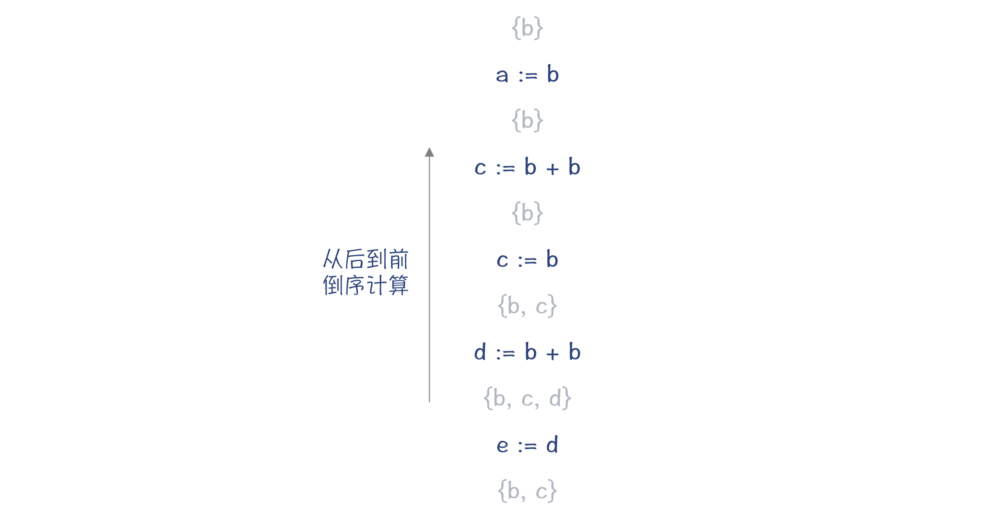
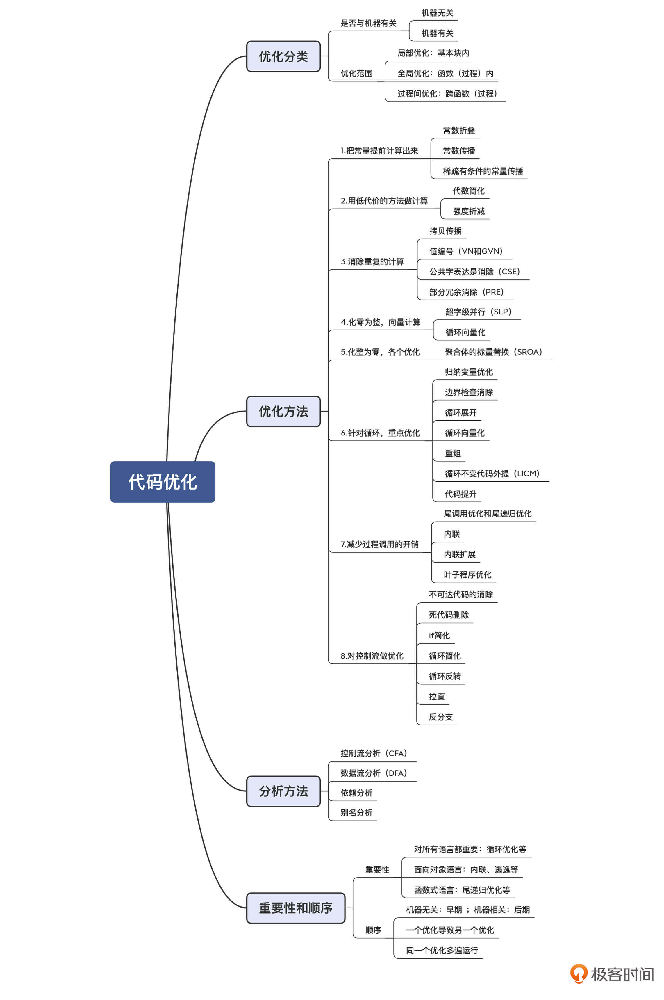

- 00 学习指南 如何学习这门编译原理实战课？.md.html
- 00 开篇词 在真实世界的编译器中游历.md.html
- 01 编译的全过程都悄悄做了哪些事情？.md.html
- 02 词法分析：用两种方式构造有限自动机.md.html
- 03 语法分析：两个基本功和两种算法思路.md.html
- 04 语义分析：让程序符合语义规则.md.html
- 05 运行时机制：程序如何运行，你有发言权.md.html
- 06 中间代码：不是只有一副面孔.md.html
- 07 代码优化：跟编译器做朋友，让你的代码飞起来.md.html
- 08 代码生成：如何实现机器相关的优化？.md.html
- 09 Java编译器（一）：手写的编译器有什么优势？.md.html
- 10 Java编译器（二）：语法分析之后，还要做些什么？.md.html
- 11 Java编译器（三）：属性分析和数据流分析.md.html
- 12 Java编译器（四）：去除语法糖和生成字节码.md.html
- 13 Java JIT编译器（一）：动手修改Graal编译器.md.html
- 14 Java JIT编译器（二）：Sea of Nodes为何如此强大？.md.html
- 15 Java JIT编译器（三）：探究内联和逃逸分析的算法原理.md.html
- 16 Java JIT编译器（四）：Graal的后端是如何工作的？.md.html
- 17 Python编译器（一）：如何用工具生成编译器？.md.html
- 18 Python编译器（二）：从AST到字节码.md.html
- 19 Python编译器（三）：运行时机制.md.html
- 20 JavaScript编译器（一）：V8的解析和编译过程.md.html
- 21 JavaScript编译器（二）：V8的解释器和优化编译器.md.html
- 22 Julia编译器（一）：如何让动态语言性能很高？.md.html
- 23 Julia编译器（二）：如何利用LLVM的优化和后端功能？.md.html
- 24 Go语言编译器：把它当作教科书吧.md.html
- 25 MySQL编译器（一）：解析一条SQL语句的执行过程.md.html
- 26 MySQL编译器（二）：编译技术如何帮你提升数据库性能？.md.html
- 27 课前导读：学习现代语言设计的正确姿势.md.html
- 28 前端总结：语言设计也有人机工程学.md.html
- 29 中端总结：不遗余力地进行代码优化.md.html
- 30 后端总结：充分发挥硬件的能力.md.html
- 31 运行时（一）：从0到语言级的虚拟化.md.html
- 32 运行时（二）：垃圾收集与语言的特性有关吗？.md.html
- 33 并发中的编译技术（一）：如何从语言层面支持线程？.md.html
- 34 并发中的编译技术（二）：如何从语言层面支持协程？.md.html
- 35 并发中的编译技术（三）：Erlang语言厉害在哪里？.md.html
- 36 高级特性（一）：揭秘元编程的实现机制.md.html
- 37 高级特性（二）：揭秘泛型编程的实现机制.md.html
- 38 综合实现（一）：如何实现面向对象编程？.md.html
- 39 综合实现（二）：如何实现函数式编程？.md.html
- 40 成果检验：方舟编译器的优势在哪里？.md.html
- 不定期加餐1 远程办公，需要你我具备什么样的素质？.md.html
- 不定期加餐2 学习技术的过程，其实是训练心理素质的过程.md.html
- 不定期加餐3 这几年，打动我的两本好书.md.html
- 不定期加餐4 从身边的牛人身上，我学到的一些优秀品质.md.html
- 不定期加餐5 借助实例，探究C++编译器的内部机制.md.html
- 划重点 7种编译器的核心概念与算法.md.html
- 期末答疑与总结 再次审视学习编译原理的作用.md.html
- 热点问题答疑 如何吃透7种真实的编译器？.md.html
- 用户故事 易昊：程序员不止有Bug和加班，还有诗和远方.md.html
- 知识地图 一起来复习编译技术核心概念与算法.md.html
- 结束语 实战是唯一标准！.md.html
- 捐赠
07 代码优化：跟编译器做朋友，让你的代码飞起来
你好，我是宫文学。
一门语言的性能高低，是它能否成功的关键。拿JavaScript来说，十多年来，它的性能多次得到成倍的提升，这也是前端技术栈如此丰富和强大的根本原因。
因此，编译器会无所不用其极地做优化，而优化工作在编译器的运行时间中，也占据了很大的比例。
不过，对编译技术的初学者来说，通常会搞不清楚编译器到底做了哪些优化，这些优化的实现思路又是怎样的。
所以今天这一讲，我就重点给你普及下编译器所做的优化工作，及其工作原理。在这个过程中，你还会弄明白很多似曾相识的术语，比如在前端必须了解的AST、终结符、非终结符等，在中后端必须熟悉的常数折叠、值编号、公共子表达式消除等。只有这样，你才算是入门了。
首先，我带你认识一些常见的代码优化方法。
常见的代码优化方法
对代码做优化的方法有很多。如果要把它们分一下类的话，可以按照下面两个维度：
- 第一个分类维度，是机器无关的优化与机器相关的优化。机器无关的优化与硬件特征无关，比如把常数值在编译期计算出来（常数折叠）。而机器相关的优化则需要利用某硬件特有的特征，比如SIMD指令可以在一条指令里完成多个数据的计算。
- 第二个分类维度，是优化的范围。本地优化是针对一个基本块中的代码，全局优化是针对整个函数（或过程），过程间优化则能够跨越多个函数（或过程）做优化。
但优化算法很多，仅仅按照这两个维度分类，仍显粗糙。所以，我就按照优化的实现思路再分分类，让你了解起来更轻松一些。
思路1：把常量提前计算出来
程序里的有些表达式，肯定能计算出一个常数值，那就不要等到运行时再去计算，干脆在编译期就计算出来。比如 “x=2*3”可以优化成“x=6”。这种优化方法，叫做常数折叠（Constant Folding）。
而如果你一旦知道x的值其实是一个常量，那你就可以把所有用到x的地方，替换成这个常量，这叫做常数传播（Constant Propagation）。如果有“y=x*2”这样一个语句，那么就能计算出来“y=12”。所以说，常数传播会导致更多的常数折叠。
就算不能引起新的常数折叠，比如说“z=a+x”，替换成“z=a+6”以后，计算速度也会更快。因为对于很多CPU来说，“a+x”和“a+6”对应的指令是不一样的。前者可能要生成两条指令（比如先把a放到寄存器上，再把x加上去），而后者用一条指令就行了，因为常数可以作为操作数。
更有用的是，常数传播可能导致分支判断条件是常量，因此导致一个分支的代码不需要被执行。这种优化叫做稀疏有条件的常数传播（Sparse Conditional Constant Propagation）。
a = 2
b = 3
if(a<b){ //判断语句去掉
... //直接执行这个代码块
}
else{
... //else分支会去掉
}
思路2：用低代价的方法做计算
完成相同的计算，可以用代价更低的方法。比如“x=x+0”这行代码，操作前后x没有任何变化，所以这样的代码可以删掉；又比如“x=x*0” 可以简化成“x=0”。这类利用代数运算的规则所做的简化，叫做代数简化（Algebra Simplification）。
对于很多CPU来说，乘法运算改成移位运算，速度会更快。比如，“x*2”等价于“x<<1”，“x*9”等价于“x<<3+x”。这种采用代价更低的运算的方法，也叫做强度折减（Strength Reduction）。
思路3：消除重复的计算
下面的示例代码中，第三行可以被替换成“z:=2*x”， 因为y的值就等于x。这个时候，可能x的值已经在寄存器中，所以直接采用x，运算速度会更快。这种优化叫做拷贝传播（Copy Propagation）。
x := a + b
y := x
z := 2 * y
值编号（Value Numbering）也能减少重复计算。值编号是把相同的值，在系统里给一个相同的编号，并且只计算一次即可。比如，Wikipedia上的这个案例：
w := 3
x := 3
y := x + 4
z := w + 4
其中w和x的值是一样的，因此编号是相同的。这会进一步导致y和z的编号也是相同的。进而，它们可以简化成：
w := 3
x := w
y := w + 4
z := y
值编号又可以分为两种，本地值编号（在一个基本块中）和全局值编号（GVN，在一个函数范围内）。
还有一种优化方法叫做公共子表达式消除（Common Subexpression Elimination，CSE），也会减少计算次数。下面这两行代码，x和y右边的形式是一样的，如果这两行代码之间，a和b的值没有发生变化（比如采用SSA形式），那么x和y的值一定是一样的。
x := a + b
y := a + b
那我们就可以让y等于x，从而减少了一次对“a+b”的计算，这就是公共子表达式消除。
x := a + b
y := x
部分冗余消除（Partial Redundancy Elimination，PRE），是公共子表达式消除的一种特殊情况。比如，这个来自Wikipedia的例子中，一个分支有“x+4”这个公共子表达式，而另一个分支则没有。
if (some_condition) {
// some code that does not alter x
y = x + 4;
}
else {
// other code that does not alter x
}
z = x + 4;
但是，上述代码仍然可以优化，使得在if结构中，“x+4”这个值肯定会被计算一次，因此“z=x+4”就可以被优化。
if (some_condition) {
// some code that does not alter x
t = x + 4;
y = t;
}
else {
// other code that does not alter x
t = x + 4;
}
z = t;
思路4：化零为整，向量计算
很多CPU支持向量运算，也就是SIMD（Single Instruction Multiple Data）指令。这就可以在一条指令里计算多个数据。比如AVX-512指令集，可以使用512位的寄存器做运算，这个指令集的一条add指令相当于一次能把16个整数加到另16个整数上，以1当16呀。
比如，把16万个整数相加，应该怎样写程序呢？普通方法，是循环16万次，每次读1个数据，并做累加。向量化的方法，是每次读取16个，用AVX-512指令做加法计算，一共循环计算1万次，最后再把得到的16个数字相加就行了。
向量优化的一个例子是超字级并行（Superword-Level Parallelism，SLP)。它是把基本块中的多个变量组成一个向量，用一个指令完成多个变量的计算。
向量优化的另一个例子是循环向量化（Loop Vectorization），我会在下面针对循环的优化思路中讲到它。
思路5：化整为零，各个优化
另一个思路是反着的，是化整为零。
很多语言都有结构和对象这样的复合数据类型，内部包含了多个成员变量，这种数据类型叫做聚合体（aggregates）。通常，为这些对象申请内存的时候，是一次就申请一整块，能放下里面的所有成员。但这样做，非常不利于做优化。
通常的优化算法都是针对标量（Scalar）的。如果经过分析，发现可以把聚合体打散，像使用单个本地变量（也就是标量）一样使用聚合体的成员变量，那就有可能带来其他优化的机会。比如，可以把聚合体的成员变量放在寄存器中进行计算，根本不需要访问内存。
这种优化叫做聚合体的标量替换（Scalar Replacement of Aggregates，SROA）。在研究Java的JIT编译器时，我们会见到一个这类优化的例子。
思路6：针对循环，重点优化
在编译器中，对循环的优化从来都是重点，因为程序中最多的计算量都是被各种循环消耗掉的。所以，对循环做优化，会起到事半功倍的效果。如果一个循环执行了10000次，那么你的优化效果就会被扩大10000倍。
对循环做优化，有很多种方法，我来和你介绍几种常用的。
第一种：归纳变量优化（Induction Variable Optimization）。
看下面这个循环，其中的变量j是由循环变量派生出来的，这种变量叫做该循环的归纳变量。归纳变量的变化是很有规律的，因此可以尝试做强度折减优化。示例代码中的乘法可以由加法替代。
int j = 0;
for (int i = 1; i < 100; i++) {
j = 2*i; //2*i可以替换成j+2
}
return j;
第二种：边界检查消除（Unnecessary Bounds-checking Elimination）。
当引用一个数组成员的时候，通常要检查下标是否越界。在循环里面，如果每次都要检查的话，代价就会相当高（例如做多个数组的向量运算的时候）。如果编译器能够确定，在循环中使用的数组下标（通常是循环变量或者基于循环变量的归纳变量）不会越界，那就可以消除掉边界检查的代码，从而大大提高性能。
第三种：循环展开（Loop Unrolling）。
把循环次数减少，但在每一次循环里，完成原来多次循环的工作量。比如：
for (int i = 0; i< 100; i++){
sum = sum + i;
}
优化后可以变成：
for (int i = 0; i< 100; i+=5){
sum = sum + i;
sum = sum + i + 1;
sum = sum + i + 2;
sum = sum + i + 3;
sum = sum + i + 4;
}
进一步，循环体内的5条语句就可以优化成1条语句：“sum = sum + i*5 + 10;”。
减少循环次数，本身就能减少循环条件的执行次数。同时，它还会增加一个基本块中的指令数量，从而为指令排序的优化算法创造机会。指令排序会在下一讲中介绍。
第四种：循环向量化（Loop Vectorization）。
在循环展开的基础上，我们有机会把多次计算优化成一个向量计算。比如，如果要循环16万次，对一个包含了16万个整数的数组做汇总，就可以变成循环1万次，每次用向量化的指令计算16个整数。
第五种：重组（Reassociation）。
在循环结构中，使用代数简化和重组，能获得更大的收益。比如，如下对数组的循环操作，其中数组a[i,j]的地址是“a+i*N+j”。但这个运算每次循环就要计算一次，一共要计算M*N次。但其实，这个地址表达式的前半截“a+i*N”不需要每次都在内循环里计算，只要在外循环计算就行了。
for (i = 0; i< M; i++){
for (j = 0; j<N; j++){
a[i,j] = b + a[i,j];
}
}
优化后的代码相当于：
for (i = 0; i< M; i++){
t=a+i*N;
for (j = 0; j<N; j++){
*(t+j) = b + *(t+j);
}
}
第六种：循环不变代码外提（Loop-Invariant Code Motion，LICM）。
在循环结构中，如果发现有些代码其实跟循环无关，那就应该提到循环外面去，避免一次次重复计算。
第七种：代码提升（Code Hoisting，或Expression Hoisting）。
在下面的if结构中，then块和else块都有“z=x+y”这个语句，它可以提到if语句的外面。
if (x > y)
...
z = x + y
...
}
else{
z = x + y
...
}
这样变换以后，至少代码量会降低。但是，如果这个if结构是在循环里面，那么可以继续借助循环不变代码外提优化，把“z=x+y”从循环体中提出来，从而降低计算量。
z = x + y
for(int i = 0; i < 10000; i++){
if (x > y)
...
}
else{
...
}
}
另外，前面说过的部分冗余优化，也可能会产生可以外提的代码，借助这一优化方法，可以形成进一步优化的效果。
针对循环能做的优化还有不少，因为对循环做优化往往是收益很高的！
思路7：减少过程调用的开销
你知道，当程序调用一个函数的时候，开销是很大的，比如保存原来的栈指针、保存某些寄存器的值、保存返回地址、设置参数，等等。其中很多都是内存读写操作，速度比较慢。
所以，如果能做一些优化，减少这些开销，那么带来的优化效果会是很显著的，具体的优化方法主要有下面几种。
第一种：尾调用优化（Tail-call Optimization）和尾递归优化（Tail-recursion Elimination）。
尾调用就是一个函数的最后一句，是对另一个函数的调用。比如，下面这段示例代码：
f(){
...
return g(a,b);
}
而如果g()本身就是f()的最后一行代码，那么f()的栈帧已经没有什么用了，可以撤销掉了（修改栈顶指针的值），然后直接跳转到g()的代码去执行，就像f()和g()是同一个函数一样。这样可以让g()复用f()的栈空间，减少内存消耗，也减少一些内存读写操作（比如，保护寄存器、写入返回地址等）。
如果f()和g()是同一个函数，这就叫做尾递归。很多同学都应该知道，尾递归是可以转化为一个循环的。我们在第3讲改写左递归文法为右递归文法的时候，就曾经用循环代替了递归调用。尾递归转化为循环，不但可以节省栈帧的开销，还可以进一步导致针对循环的各种优化。
第二种：内联（inlining）。
内联也叫做过程集成（Procedure Integration），就是把被调用函数的代码拷贝到调用者中，从而避免函数调用。
对于我们现在使用的面向对象的语言来说，有很多短方法，比如getter、settter方法。这些方法内联以后，不仅仅可以减少函数调用的开销，还可以带来其他的优化机会。在探究Java的JIT编译器时，我就会为你剖析一个内联的例子。
第三种：内联扩展（In-Line Expansion）。
内联扩展跟普通内联类似，也是在调用的地方展开代码。不过内联扩展被展开的代码，通常是手写的、高度优化的汇编代码。
第四种：叶子程序优化（Leaf-Routine Optimization）。
叶子程序，是指不会再调用其他程序的函数（或过程）。因此，它也可以对栈的使用做一些优化。比如，你甚至可以不用生成栈帧，因为根据某些调用约定，程序可以访问栈顶之外一定大小的内存。这样就省去了保存原来栈顶、修改栈顶指针等一系列操作。
思路8：对控制流做优化
通过对程序的控制流分析，我们可以发现很多优化的机会。这就好比在做公司管理，优化业务流程，就会提升经营效率。我们来看一下这方面的优化方法有哪些。
第一种：不可达代码消除（Unreacheable-code Elimination）。根据控制流的分析，发现有些代码是不可能到达的，可以直接删掉，比如return语句后面的代码。
第二种：死代码删除（Dead-code Elimination）。通过对流程的分析，发现某个变量赋值了以后，后面根本没有再用到这个变量。这样的代码就是死代码，就可以删除。
第三种：If简化（If Simplification)。在讲常量传播时我们就见到过，如果有可能if条件肯定为真或者假，那么就可以消除掉if结构中的then块、else块，甚至整个消除if结构。
第四种：循环简化（Loop Simplification）。也就是把空循环或者简单的循环，变成直线代码，从而增加了其他优化的机会，比如指令的流水线化。
第五种：循环反转（Loop Inversion）。这是对循环语句常做的一种优化，就是把一个while循环改成一个repeat…until循环（或者do…while循环）。这样会使基本块的结构更简化，从而更有利于其他优化。
第六种：拉直（Straightening）。如果发现两个基本块是线性连接的，那可以把它们合并，从而增加优化机会。
第七种：反分支（Unswitching）。也就是减少程序分支，因为分支会导致程序从一个基本块跳到另一个基本块，这样就不容易做优化。比如，把循环内部的if分支挪到循环外面去，先做if判断，然后再执行循环，这样总的执行if判断的次数就会减少，并且循环体里面的基本块不那么零碎，就更加容易优化。
这七种优化方法，都是对控制流的优化，有的减少了基本块，有的减少了分支，有的直接删除了无用的代码。
代码优化所依赖的分析方法
前面我列举了很多优化方法，目的是让你认识到编译器花费大量时间去做的，到底都是一些什么工作。当然了，我只是和你列举了最常用的一些优化方法，不过这已经足够帮助你建立对代码优化的直觉认知了。我们在研究具体的编译器的时候，还会见到其他一些优化方法。不过你不用担心，根据上面讲到的各种优化思路，你可以举一反三，非常快速地理解这些新的优化方法。
上述优化方法，有的比较简单，比如常数折叠，依据AST或MIR做点处理就可以完成。但有些优化，就需要比较复杂的分析方法做支撑才能完成。这些分析方法包括控制流分析、数据流分析、依赖分析和别名分析等。
控制流分析（Control-Flow Analysis，CFA）。控制流分析是帮助我们建立对程序执行过程的理解，比如哪里是程序入口，哪里是出口，哪些语句构成了一个基本块，基本块之间跳转关系，哪个结构是一个循环结构（从而去做循环优化），等等。
前面提到的控制流优化，就是要基于对控制流的正确理解。下面要讲的数据流分析算法，在做全局分析的时候，也要基于控制流图（CFG），所以也需要以控制流分析为基础。
数据流分析（Data-Flow Analysis，DFA）。数据流分析，能够帮助我们理解程序中的数据变化情况。我们看一个分析变量活跃性的例子。
如下图所示，它从后到前顺序扫描代码，花括号中的是在当前位置需要的变量的集合。如果某个变量不被需要，那就可以做死代码删除的优化。

经过多遍扫描和删除后，最后的代码会精简成一行：
关于数据流分析框架的详细描述，你可以再参考下其他资料（比如，《编译原理之美》专栏第27和28两讲）。
除了做变量活跃性分析以外，数据流分析方法还可以做很多有用的分析。比如，可达定义分析（Reaching Definitions Analysis）、可用表达式分析（Available Expressions Analysis）、向上暴露使用分析（Upward Exposed Uses Analysis）、拷贝传播分析（Copy-Propagation Analysis）、常量传播分析（Constant-Propagation Analysis）、局部冗余分析（Partial-Redundancy Analysis）等。
就像基于变量活跃性分析可以做死代码删除的优化一样，上述分析是做其他很多优化的基础。
依赖分析（Dependency Analysis）。依赖分析，就是分析出程序代码的控制依赖（Control Dependency）和数据依赖（Data Dependency）关系。这对指令排序和缓存优化很重要。
指令排序会在下一讲介绍。它能通过调整指令之间的顺序来提升执行效率。但指令排序不能打破指令间的依赖关系，否则程序的执行就不正确。
别名分析（Alias Analysis）。在C、C++等可以使用指针的语言中，同一个内存地址可能会有多个别名，因为不同的指针都可能指向同一个地址。编译器需要知道不同变量是否是别名关系，以便决定能否做某些优化。
好了，你已经了解了优化的方法和所依赖的分析方法。那么，这些方法这么多，哪些优化方法更重要，优化的顺序又是什么呢？
优化方法的重要性和顺序
我们先看看哪些优化方法更重要。
有些优化，比如对循环的优化，对每门语言都很重要，因为循环优化的收益很大。
而有些优化，对于特定的语言更加重要。在课程后面分析像Java、JavaScript这样的面向对象的现代语言时，你会看到，内联优化和逃逸分析的收益就比较大。而对于某些频繁使用尾递归的函数式编程语言来说，尾递归的优化就必不可少，否则性能损失太大。
至于优化的顺序，有的优化适合在早期做（基于HIR和MIR），有的优化适合在后期做（基于LIR和机器代码）。并且，你通过前面的例子也可以看到，一般做完某个优化以后，会给别的优化带来机会，所以经常会在执行某个优化算法的时候，调用了另一个优化算法，而同样的优化算法也可能会运行好几遍。
课程小结
今天这讲，我带你认识了很多常见的优化方法和背后的分析方法。我们很难一下子记住所有的方法，但完全可以先对这些概念建立总体印象。这样可以避免在研究具体编译器时，我们产生“瞎子摸象”的感觉。
另外，熟悉我提到的那些名词术语也很重要，因为它们经常在代码注释和相关文献里出现。这些名词要成为你的一项基本功。
我把今天的课程内容，也整理成了思维导图，供你复习、参考。

在课程的第二个模块“真实编译器解析篇”的时候，我会和你分析某些优化算法具体的实现细节，并带你跟踪编译优化的过程。
根据我的经验，当你写的程序对性能要求很高的时候，你需要能够跟踪了解编译优化的过程，看看如何才能达到最好的优化效果。我之前写过与内存计算有关的程序，就特别关注如何才能让编译器做向量优化。因为是否使用向量，性能差别很大。现在做AI工作的同学，一定也有类似的需求。
还有些开源项目，它们的性能与内联关系密切。这就要做一定的调优，以确保使用频率最高、性能影响最大的函数全部内联。
还有，Chrome、Android和Flutter共同使用的二维图形引擎Skia对性能很敏感，所以即使在Windows平台上，仍然要求用Clang编译。为啥坚持用Clang编译呢？因为Skia跟LLVM的优化方法是紧密配合的，换了其他编译器就达不到这么好的优化效果。
类似的例子还有很多。了解优化，能够充分利用编译器的优化能力，应该是我们想拥有的一项高级技能。
一课一思
你可以比较一下值编号和公共子表达式消除这两个优化方法，说说它们的相同点和不同点吗？你能举出一个例子来，是其中一个算法能做优化，而另一个算法不能的吗？
欢迎在留言区中分享你的思考，也欢迎你把这节课分享给你的朋友。
参考资料
- 龙书（Compilers Principles, Techniques and Tools）：第9章，机器无关的优化，里面介绍了各种优化算法。
- 鲸书（Advanced Compiler Design and Implementation）中讲优化的算法有很多，第7~15章你都可以看看。
© 2019 - 2023 Liangliang Lee. Powered by gin and hexo-theme-book.